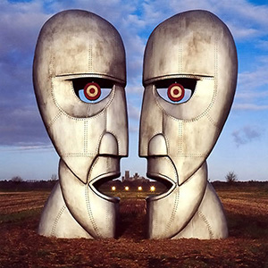

The Piper at the Gates of Dawn
Released 5 August 1967
| Side 1 | Side 2 |
|---|---|
| Astronomy Domine (4:12) |
Interstellar Overdrive (9:41) |
| Lucifer Sam (3:07) |
The Gnome (2:13) |
| Matilda Mother (3:08) |
Chapter 24 (3:42) |
| Flaming (2:46) |
The Scarecrow (2:11) |
| Pow R. Toc H. (4:26) |
Bike (3:21) |
The Piper at the Gates of Dawn is the debut studio album by the English rock band Pink Floyd, and the only one made under founding member Syd Barrett's leadership. The album, named after the title of chapter seven of Kenneth Grahame's The Wind in the Willows and featuring a kaleidoscopic cover photo taken by Vic Singh, was recorded from February to May 1967. It was produced by Beatles engineer Norman Smith and released in 1967 by EMI Columbia in the United Kingdom and Tower in the United States, in August and October respectively. The release of the album in the US was timed with the band's tour of the US. In the UK, no singles were released from the album, but in the US Flaming was offered as a single. The US version of the album has a rearranged tracklist, and contains the UK non-album single, See Emily Play. Two of the album's songs, Astronomy Domine and Interstellar Overdrive, became long-term mainstays of the band's live setlist, while other songs were performed live only a handful of times.
Since its release, the album has been hailed as one of the best psychedelic rock albums of all time. In 1973, it was packaged with the band's second album, A Saucerful of Secrets, and released as A Nice Pair to introduce new fans to the band's early work after the success of The Dark Side of the Moon. Special limited editions of The Piper at the Gates of Dawn were issued to mark its thirtieth and fortieth anniversaries in 1997 and 2007, respectively, with the latter release containing bonus tracks. In 2012, The Piper at the Gates of Dawn was voted 347th on Rolling Stone magazine's list of the 500 Greatest Albums of All Time.
A Saucerful of Secrets
Released 29 June 1968 (UK) / 27 July 1968 (US)
| Side 1 | Side 2 |
|---|---|
| Let There Be More Light (5:38) |
A Saucerful of Secrets (11:57) |
| Remember a Day (4:33) |
See-Saw (4:36) |
| Set the Controls for the Heart of the Sun (5:28) |
Chapter 24 (3:42) |
| Corporal Clegg (4:13) |
Jugband Blues (3:00) |
A Saucerful of Secrets is the second studio album by the English rock band Pink Floyd. It was recorded at EMI's Abbey Road Studios on various dates from August 1967 to April 1968 and was released on 29 June 1968, through EMI Columbia in the United Kingdom, while the album was released on 27 July 1968 in the United States by Tower.
The album was recorded before and after Syd Barrett's departure from the group. Owing to Barrett's behaviour becoming increasingly unpredictable, David Gilmour was recruited in January 1968. As a result, A Saucerful of Secrets became the only non-compilation Pink Floyd album on which all five band members appeared, the first for Gilmour, with him appearing on five songs (Let There Be More Light, Set the Controls for the Heart of the Sun, Corporal Clegg, A Saucerful of Secrets and See-Saw), and the last for Barrett, with him on three (Remember a Day, Jugband Blues and Set the Controls for the Heart of the Sun). Set the Controls for the Heart of the Sun was the only song all five members appeared on together. Drummer Nick Mason declared A Saucerful of Secrets his favourite Pink Floyd album.
More
Released 13 June 1969
| Side 1 | Side 2 |
|---|---|
| Cirrus Minor (5:18) |
Main Theme (5:27) |
| The Nile Song (3:26) |
Ibiza Bar (3:19) |
| Crying Song (3:33) |
More Blues (2:12) |
| Up the Khyber (2:12) |
Quicksilver (7:13) |
| Green Is the Colour (2:58) |
A Spanish Piece (1:05) |
| Cymbaline (4:50) |
Dramatic Theme (2:15) |
| Party Sequence (1:07) |
More is the first full-length soundtrack album, and third studio album, by the English rock band Pink Floyd, released on 13 June 1969 in the United Kingdom. On 9 August 1969, it was released in the United States as Original Motion Picture Soundtrack from the film More. The film More was made in Luxembourg in 1969 and was directed by Barbet Schroeder.
More contains some acoustic folk ballads, a genre that appeared sparsely on later works. It also contains some of the band's heaviest recordings, such as The Nile Song and Ibiza Bar, as well as several instrumental tracks, featuring their experimental and avant-garde approach.
This is Pink Floyd's first full album without founder member Syd Barrett, who was ousted from the group in early 1968 during the recording of A Saucerful of Secrets. It is one of the three Pink Floyd albums to feature David Gilmour as the sole lead vocalist, the others being 1987's A Momentary Lapse of Reason and 2014's The Endless River, and it is also the first album to be produced by Pink Floyd without assistance from Norman Smith. More was recorded at Pye Studios, Marble Arch, London and engineered by Brian Humphries.
Ummagumma
Released 25 October 1969
| Side 1 | Side 2 | Side 3 | Side 4 |
|---|---|---|---|
| Astronomy Domine (8:32) |
Set the Controls for the Heart of the Sun (13:28) |
Sysyphus (Parts 1-4) (6:15) |
The Narrow Way (Parts 1-3) (12:17) |
| Careful With That Axe, Eugene (8:49) |
A Saucerful of Secrets (12:48) |
Grantchester Meadows (7:26) |
The Grand Vizier's Garden Party (Parts 1-3) (8:46) |
| Several Species of Small Furry Animals Gathered Together in a Cave and Grooving with a Pict (4:59) |
Ummagumma is a double album by the English progressive rock band Pink Floyd. It was released on 25 October 1969, through Harvest Records. The first disc is a live album that contains part of their normal set list of the time, while the second contains solo compositions by each member of the band recorded as their fourth studio album. The artwork was designed by regular Floyd collaborators Hipgnosis and features a number of pictures of the band combined to give a Droste effect.
Although the album was well received at the time of release, and was a top five hit in the UK album charts, it has since been looked upon unfavourably by the band, who have expressed negative opinions about it in interviews. Nevertheless, the album has been reissued on CD several times, along with the rest of their catalogue.
Atom Heart Mother
Released 2 October 1970

| Side 1 | Side 2 |
|---|---|
| Atom Heart Mother (23:44) |
If (4:31) |
| Summer '68 (5:29) |
|
| Fat Old Sun (5:22) |
|
| Alan's Psychedelic Breakfast (13:00) |
Atom Heart Mother is the fifth studio album by English progressive rock band Pink Floyd. It was released by Harvest and EMI Records 2 October 1970 in the UK, and by Harvest and Capitol on 10 October 1970 in the US. It was recorded at Abbey Road Studios in London, England, and was the band's first album to reach number 1 in the UK, while it reached number 55 in the US chart, eventually going gold there. A remastered CD was released in 1994 in the UK and the United States, and again in 2011. Ron Geesin, who had already influenced and collaborated with Roger Waters, made a notable contribution to the album and received a then-rare outside songwriting credit.
This was the first Pink Floyd album to be specially mixed for four-channel quadraphonic sound as well as conventional two-channel stereo. The SQ quadraphonic mix was released on LP in a matrix format compatible with standard stereo record players. There was also a release of the quadraphonic version in the UK in fully discrete four-channel form on the Quad-8 format, a four-channel variant of the stereo 8-track tape cartridge.
The cover was designed by Hipgnosis, and was significant in that it was the first one to not feature the band's name on the cover, or contain any photographs of the band anywhere. This was a trend that would continue on subsequent covers throughout the 1970s and beyond.
Although it was commercially successful on release, the band, particularly Waters and David Gilmour, have expressed several negative opinions of the album in more recent years. Nevertheless, it remained popular enough for Gilmour to perform the title track with Geesin in 2008.
Meddle
Released 30 October 1971
| Side 1 | Side 2 |
|---|---|
| One of These Days (5:57) |
Echoes (23:29) |
| A Pillow of Winds (5:10) |
|
| Fearless (6:08) |
|
| San Tropez (3:43) |
|
| Seamus (2:16) |
Meddle is the sixth studio album by English progressive rock group Pink Floyd, released on 30 October 1971 by Harvest Records. It was produced between the band's touring commitments, from January to August 1971. The album was recorded at a series of locations around London, including Abbey Road Studios and Morgan Studios.
With no material to work with and no clear idea of the album's direction, the group devised a series of novel experiments which eventually inspired the album's signature track, Echoes. Although many of the band's later albums would be unified by a central theme with lyrics written mainly by Roger Waters, Meddle was a group effort with lyrical contributions from each member, and is considered a transitional album between the Syd Barrett-influenced group of the late 1960s and the emerging Pink Floyd. The cover, incorporating a close-up shot of an ear underwater was, as with several previous albums, designed by Hipgnosis, though Storm Thorgerson was unhappy with the final result.
The album was well received by music critics upon its release. However, despite being commercially successful in the United Kingdom, lackluster publicity on the part of their United States-based label led to poor sales there upon initial release.
Obscured by Clouds
Released 2 June 1972
| Side 1 | Side 2 |
|---|---|
| Obscured by Clouds (3:03) |
Childhood's End (4:31) |
| When You're In (5:10) |
Free Four (4:15) |
| Burning Bridges (3:29) |
Stay (4:05) |
| The Gold It's in the... (3:07) |
Absolutely Curtains (5:52) |
| Wot's... Uh the Deal? (5:08) |
|
| Mudmen (4:20) |
Obscured by Clouds is the seventh studio album by English progressive rock band Pink Floyd, based on their soundtrack for the French film La Vallée, by Barbet Schroeder. Some copies of the album refer to the film by its English title, The Valley. The cover of Obscured by Clouds is an out-of-focus film still of a man in a tree. The lyrics and music tell the story of one's journeys.
The album was released in the United Kingdom on 2 June 1972, and a few weeks later in the United States, by Harvest, reaching number 6 and number 46 respectively. A single, Free Four, was issued in the US only.
The Dark Side of the Moon
Released 1 March 1973
| Side 1 | Side 2 |
|---|---|
| Speak to Me (1:30) |
Money (6:30) |
| Breathe (2:43) |
Us and Them (7:51) |
| On the Run (3:30) |
Any Colour You Like (3:24) |
| Time (6:53) |
Brain Damage (3:50) |
| The Great Gig in the Sky (4:15) |
Eclipse (2:03) |
The Dark Side of the Moon is the eighth studio album by the English progressive rock band Pink Floyd, released on 1 March 1973. It built on ideas explored in the band's earlier recordings and live shows, but lacks the extended instrumental excursions that characterised their work following the departure in 1968 of founder member, principal composer, and lyricist, Syd Barrett. The themes on The Dark Side of the Moon include conflict, greed, the passage of time, and mental illness, the latter partly inspired by Barrett's deteriorating mental state.
Developed during live performances, an early version of the suite was premiered several months before studio recording began; new material was recorded in two sessions in 1972 and 1973 at Abbey Road Studios in London. The group used some of the most advanced recording techniques of the time, including multitrack recording and tape loops. Analogue synthesizers were given prominence in several tracks, and a series of recorded interviews with the band's road crew and others provided the philosophical quotations used throughout. Engineer Alan Parsons was responsible for some of the album's most notable sonic aspects and the recruitment of non-lexical singer Clare Torry.
The album's iconic sleeve, designed by Storm Thorgerson, features a prism dispersing light into color and represents the band's stage lighting, the record's lyrical themes, and keyboardist Richard Wright's request for a "simple and bold" design.
The Dark Side of the Moon was an immediate success; it topped the Billboard Top LPs and Tapes chart for one week and remained in the charts for 741 weeks from 1973 to 1988. With an estimated 50 million copies sold, it is Pink Floyd's most commercially successful album and one of the best-selling albums worldwide. It has twice been remastered and re-released, and has been covered in its entirety by several other acts. It produced two singles, Money and Time. The Dark Side of the Moon is Pink Floyd's most popular album among fans and critics, and has been ranked as one of the greatest albums of all time.
Wish You Were Here
Released 12 September 1975
| Side 1 | Side 2 |
|---|---|
| Shine On You Crazy Diamond (Parts I-V) (13:38) |
Have a Cigar (5:24) |
| Welcome to the Machine (7:30) |
Wish You Were Here (5:40) |
| Shine On You Crazy Diamond (Parts VI-IX) (12:29) |
Wish You Were Here is the ninth studio album by the English progressive rock group Pink Floyd, released in September 1975. Inspired by material the group composed while performing across Europe, Wish You Were Here was recorded in numerous sessions at London's Abbey Road Studios. Some of the songs critique the music business, others express alienation, and Shine On You Crazy Diamond is a tribute to Syd Barrett, whose mental breakdown had forced him to leave the group seven years earlier. It was lead writer Roger Waters' idea to split Shine On You Crazy Diamond into two parts and use it to bookend the album around three new compositions, introducing a new concept as the group had done with their previous album, The Dark Side of the Moon.
As with The Dark Side of the Moon, the band used studio effects and synthesizers, and brought in guest singers to supply vocals on some tracks of the album. These singers were Roy Harper, who provided the lead vocals on Have a Cigar, and The Blackberries, who added backing vocals to Shine On You Crazy Diamond.
The album became an instant commercial success and record company EMI was unable to print enough copies to satisfy demand. Although it initially received mixed reviews, the album has since been acclaimed by critics and appears on Rolling Stone's list of The 500 Greatest Albums of All Time. Band members Richard Wright and David Gilmour have each cited Wish You Were Here as their favourite Pink Floyd album, and the album is widely regarded as the group's magnum opus.
Animals
Released 23 January 1977
| Side 1 | Side 2 |
|---|---|
| Pigs on the Wing 1 (1:25) |
Pigs (Three Different Ones) (11:25) |
| Dogs (17:03) |
Sheep (10:25) |
| Pigs on the Wing 2 (1:23) |
Animals is the tenth studio album by English progressive rock group Pink Floyd, released in January 1977. A concept album, it provides a scathing critique of the social-political conditions of late 1970s Britain, and presents a marked change in musical style from their earlier work. Animals was recorded at the band's studio, Britannia Row, in London, but its production was punctuated by the early signs of discord that three years later would culminate in keyboardist Richard Wright leaving the band. The album's cover image, a pig floating between two chimneys on Battersea Power Station, was conceived by bassist and writer Roger Waters, and photographed by long-time collaborators Hipgnosis.
The album was released to generally positive reviews in the United Kingdom, where it reached number 2. It was also a success in the United States, reaching number 3 on the Billboard 200, and although it scored on the American charts for only six months, steady sales have resulted in its certification by the RIAA at four times platinum. The size of the venues on the band's In the Flesh Tour, and an incident in which Waters spat at a fan, prompted him to conceive the band's subsequent album, The Wall.
The Wall
Released 30 November 1979
| Side 1 | Side 2 | Side 3 | Side 4 |
|---|---|---|---|
| In the Flesh? (3:16) |
Goodbye Blue Sky (2:45) |
Hey You (4:40) |
The Show Must Go On (1:36) |
| The Thin Ice (2:27) |
Empty Spaces (2:10) |
Is There Anybody Out There? (2:44) |
In the Flesh (4:15) |
| Another Brick in the Wall (Part I) (3:21) |
Young Lust (3:25) |
Nobody Home (3:26) |
Run Like Hell (4:20) |
| The Happiest Days of Our Lives (1:46) |
One of My Turns (3:41) |
Vera (1:35) |
Waiting for the Worms (4:04) |
| Another Brick in the Wall (Part II) (3:59) |
Don't Leave Me Now (4:08) |
Bring the Boys Back Home (1:21) |
Stop (0:30) |
| Mother (5:32) |
Another Brick in the Wall (Part III) (1:48) |
Comfortably Numb (6:23) |
The Trial (5:13) |
| Goodbye Cruel World (0:48) |
Outside the Wall (1:41) |
The Wall is the eleventh studio album by the English progressive rock band Pink Floyd. It is the last studio album released with the classic lineup of guitarist David Gilmour, bassist/lyricist Roger Waters, keyboardist Richard Wright and drummer Nick Mason before Wright left the band. Released as a double album on 30 November 1979, it was supported by a tour with elaborate theatrical effects, and adapted into a 1982 feature film, Pink Floyd – The Wall. The album features the band's only number one single; Another Brick in the Wall Part 2.
As with Pink Floyd's previous three albums, The Wall is a concept album and explores themes of abandonment and personal isolation. The album is a rock opera that follows Pink, a character whom Waters modelled after himself and the band's original leader, Syd Barrett. Pink's life begins with the loss of his father during the Second World War and continues with abuse from his schoolteachers, an overprotective mother, and the breakdown of his marriage; all contribute to his eventual self-imposed isolation from society, represented by a metaphorical wall. Waters conceived the album during Pink Floyd's 1977 In the Flesh Tour, when his frustration with the audience became so acute that he imagined a wall between the audience and the stage.
The Wall features a harsher and more theatrical style than Pink Floyd's previous albums. Wright left the band during its production but remained as a salaried musician, performing with Pink Floyd during The Wall tour. The album was one of the best selling of 1980, and by 1999 it had sold over 23 million RIAA-certified units (11.5 million albums), making it the third highest certified album in the United States. Rolling Stone placed The Wall at number 87 on its list of The 500 Greatest Albums of All Time.
The Final Cut
Released 21 March 1983
| Side 1 | Side 2 |
|---|---|
| The Post War Dream (3:02) |
Get Your Filthy Hands Off My Desert (1:19) |
| Your Possible Pasts (4:22) |
The Fletcher Memorial Home (4:11) |
| One of the Few (1:23) |
Southampton Dock (2:13) |
| The Hero's Return (2:56) |
The Final Cut (4:46) |
| The Gunner's Dream (5:07) |
Not Now John (5:01) |
| Paranoid Eyes (3:40) |
Two Suns in the Sunset (5:14) |
The Final Cut (occasionally subtitled A Requiem For The Post-War Dream by Roger Waters) is the twelfth studio album by English progressive rock group Pink Floyd. It was released on 21 March 1983 by Harvest Records in the United Kingdom, and several weeks later by Columbia Records in the United States. The Final Cut is Pink Floyd's last studio album to include founding member, bassist and songwriter Roger Waters, and their only album on which he alone is credited for writing and composition. It is also the only Pink Floyd album that does not feature keyboardist Richard Wright.
Waters originally planned The Final Cut as a soundtrack album for the 1982 film Pink Floyd - The Wall. With the onset of the Falklands War, he rewrote it as a concept album, exploring what he considered the betrayal of his father, who died serving in the Second World War. Most of its lyrics are sung by Waters; lead guitarist David Gilmour provides vocals on only one track.
The packaging, also designed by Waters, reflects the album's war theme. Although it reached the top of the UK Albums Chart, the album received mixed reviews.
Recorded in eight British studios from July to December 1982, with an accompanying short film released in the same year, production of The Final Cut was dominated by interpersonal conflict. Waters left the band in 1985 and The Final Cut remains the last Pink Floyd album he worked on.
A Momentary Lapse of Reason
Released 7 September 1987
| Side 1 | Side 2 |
|---|---|
| Signs of Life (instrumental) (4:24) |
et Another Movie / Round and Around (instrumental) (7:28) |
| Learning to Fly (4:53) |
A New Machine (Part 1) (1:46) |
| The Dogs of War (6:05) |
Terminal Frost (instrumental) (6:17) |
| One Slip (5:10) |
A New Machine (Part 2) (0:38) |
| On the Turning Away (5:42) |
Sorrow (8:46) |
A Momentary Lapse of Reason is the thirteenth studio album by the English progressive rock group Pink Floyd, released in the UK and US in September 1987. It followed guitarist David Gilmour's decision to include material recorded for his third solo album on a new Pink Floyd album with drummer Nick Mason and keyboardist Richard Wright. Although for legal reasons Wright could not be re-admitted to the band, Wright and Mason helped Gilmour craft what became the first Pink Floyd album since the December 1985 departure of bass guitarist, singer, and primary songwriter Roger Waters.
A Momentary Lapse of Reason was recorded primarily on Gilmour's converted houseboat, Astoria. Its production was marked by an ongoing legal dispute with Waters as to who owned the rights to Pink Floyd's name, an issue resolved several months after the album was released. Unlike many of Pink Floyd's studio albums, A Momentary Lapse of Reason has no central theme and is instead a collection of songs written by Gilmour, sometimes with outside songwriters.
Though it received mixed reviews and was derided by Waters, A Momentary Lapse of Reason outsold Pink Floyd's previous album The Final Cut (1983) and was supported by a successful world tour. It has been certified quadruple platinum in the United States.
The Division Bell
Released 28 March 1994
| Side 1 | Side 2 |
|---|---|
| Cluster One (Instrumental) (5:29) |
Take It Back (6:12) |
| What Do You Want from Me (4:21) |
Coming Back to Life (4:57) |
| Poles Apart (5:49) |
Keep Talking (6:11) |
| Marooned (Instrumental) (4:08) |
Lost for Words (5:14) |
| A Great Day for Freedom (3:38) |
High Hopes (6:50) |
| Wearing the Inside Out (6:28) |
The Division Bell is the fourteenth studio album by English progressive rock group Pink Floyd. It was released in the UK by EMI Records on 28 March 1994, and the US by Columbia Records on 4 April.
The music was written mostly by David Gilmour and Richard Wright; lyrically, the album deals with themes of communication. Recording took place in several locations, including the band's Britannia Row Studios, and Gilmour's houseboat, Astoria. The production team included Pink Floyd stalwarts such as producer Bob Ezrin, engineer Andy Jackson and saxophonist Dick Parry. Gilmour's new wife, Polly Samson, co-wrote many of the album's lyrics, and Wright performed his first lead vocal on a Pink Floyd album since 1973's The Dark Side of the Moon.
The album reached number one in the UK and the US, but received mixed reviews. Its release was followed immediately by a tour of the US and Europe. The Division Bell was certified gold, platinum and double platinum in the US in 1994, and triple platinum in 1999.
The Endless River
Released 7 November 2014
| Side 1 | Side 2 | Side 3 | Side 4 |
|---|---|---|---|
| Things Left Unsaid (4:26) |
Sum (4:48) |
The Lost Art of Conversation (1:42) |
Calling (3:37) |
| It's What We Do (6:17) |
Skins (2:37) |
On Noodle Street (1:42) |
Eyes to Pearls (1:51) |
| Ebb and Flow (1:55) |
Unsung (1:07) |
Night Light (1:42) |
Surfacing (2:46) |
| Anisina (3:16) |
Allons-y (1) (1:57) |
Louder than Words (6:36) |
|
| Autumn '68 (1:35) |
|||
| Allons-y (2) (1:32) |
|||
| Talkin' Hawkin' (3:29) |
The Endless River is the fifteenth and final studio album by the British progressive rock band Pink Floyd. It was released by Parlophone and Columbia Records in Friday-release countries on 7 November 2014, and in the United Kingdom and United States on 10 November 2014. It is Pink Floyd's first studio album since the death of keyboardist and founding member Rick Wright, who appears posthumously, and the third by the David Gilmour-led Pink Floyd following Roger Waters' departure in 1985. It is also the first Pink Floyd album distributed by Parlophone and Warner Bros. Records following the purchase of EMI and its assets by the Universal Music Group in 2012, their transfer to Parlophone and the purchase of Parlophone by Warner Bros. in 2013.
Described as a "swan song" for Wright, The Endless River consists mostly of instrumental music. It is based on 20 hours of unreleased material Pink Floyd wrote, recorded and produced with Wright during sessions for their previous studio album The Division Bell (1994). New material was recorded in 2013 and 2014 in Gilmour's studios the Astoria and Medina Studios in Hove, England. It was produced by Gilmour, Youth, Andy Jackson and Phil Manzanera.
Information about the The Endless River was leaked via social media, after which Pink Floyd made a formal announcement. The band, Parlophone and Columbia Records (outside Europe) launched a promotional campaign with television advertisements and installations of the album artwork in cities around the world, including London, New York, Paris, Berlin and Milan. The cover concept is by Ahmed Emad Eldin with sleeve design by Stylorouge and creative direction by Aubrey Powell.
The Endless River became the most pre-ordered album of all time on Amazon UK, and debuted at number one in several countries. The vinyl edition was the fastest-selling UK vinyl release of 2014 and the fastest-selling since 1997. Overall the album received positive reviews. The video below of Louder Than Words is the only vocal track on the album and is dedicated to the memory of Richard Wright who passed away long before the album was released.